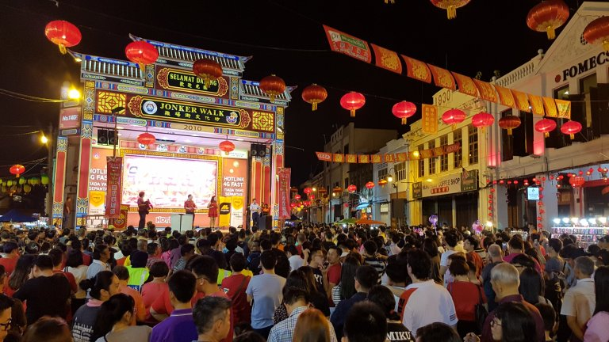
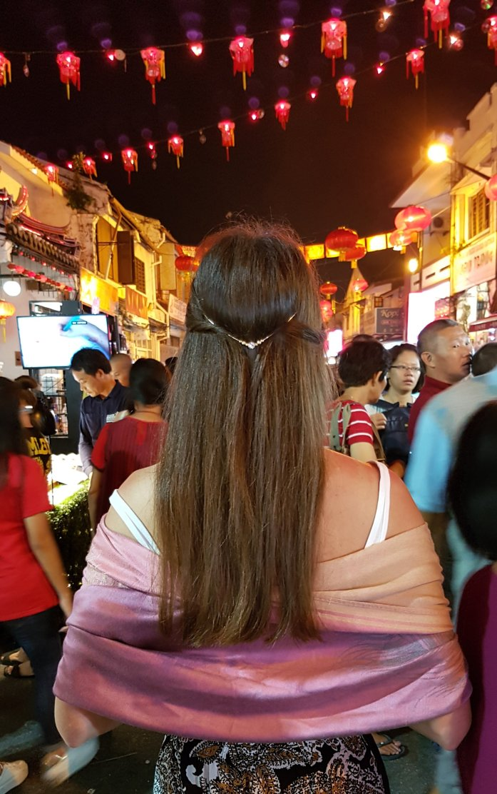
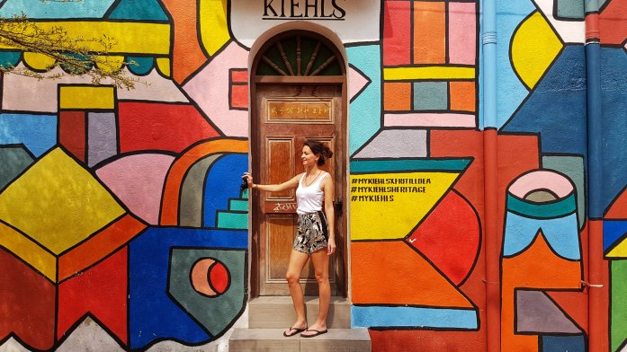
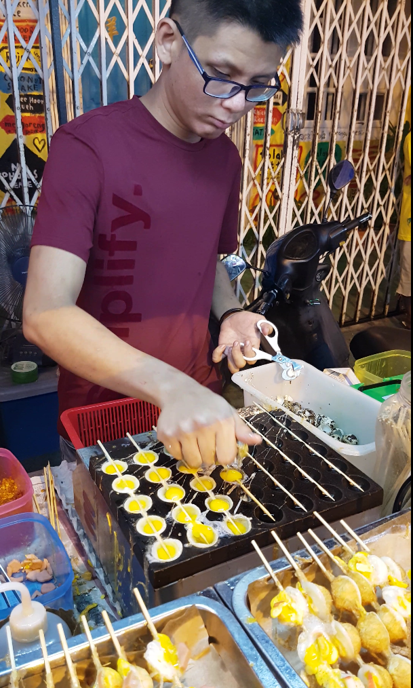
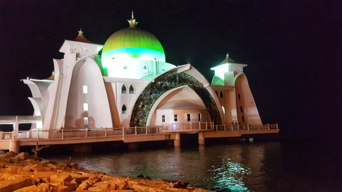
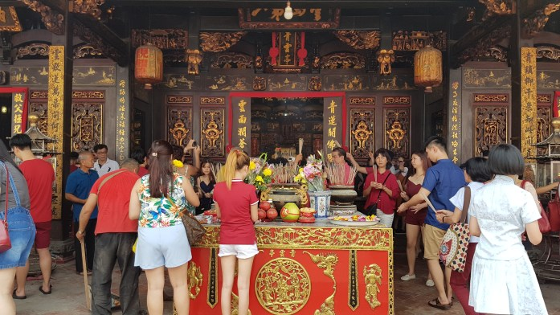
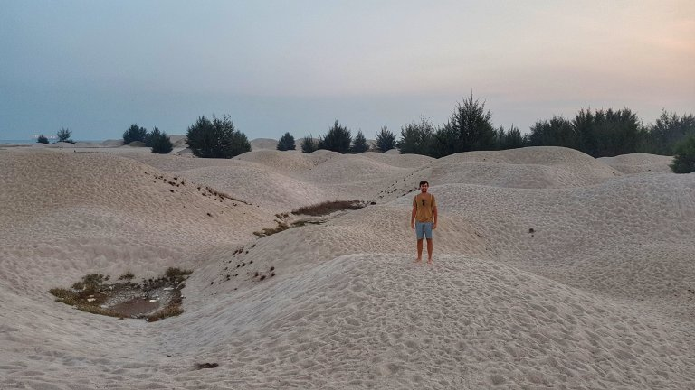

Siamo arrivati a Melaka (nome malese) la sera tardi con il bus. Bus che avrebbe dovuto sostare almeno una volta durante tutte le ore di viaggio, ma che ha deciso di non farlo. Malgrado le lamentele di tutti gli incontinenti presenti sul mezzo, l’autista ha continuato imperterrito per la sua rotta; ergo: appena arrivati alla stazione dei bus di Malacca, una fiumana di gente si è riversata dal bus alla ricerca di un bagno (me compresa). Provo ad entrare nel primo bagno che trovo ma scopro che è a pagamento (mai successo prima d’ora). Sprovvisti di Ringgit, avendo solo dollari singaporiani con noi, siamo andati a prelevare. Ovviamente il tizio fuori dal bagno accettava solo monetine, quindi siamo dovuti andare a comparare qualcosa in modo che il resto fosse in monetine. A dire il vero tutto questo l’ha fatto Carlo, mentre io mi contorcevo per terra pregando di non farmela addosso. Il secondo tentativo andò finalmente a buon fine ma, una volta entrata in bagno, ho seriamente valutato l’opzione di farmela addosso. Mai visto un bagno così schifoso… e per di più a pagamento! E ne ho visti di “bagni” sporchi durante il nostro viaggio. Welcome to Malaysia! No dai, a parte la scarsa igiene riscontrata un po’ ovunque in Malesia, più che nei Paesi precedentemente visitati, Malacca ci è piaciuta molto come città!!
Ci siamo spostati nel nucleo della città e siamo stati accolti da fuochi d’artificio e da una marea di gente giubilante in piazza che faceva il countdown…… per il capodanno cinese! Ce ne eravamo scordati! Stava per scattare la mezzanotte tra il 14 e il 15 febbraio e dare inizio quindi all’anno del cane. Le persone nate negli anni 2006, 1994, 1982, 1970, 1958, e così via (ogni 12 anni) hanno come segno dell’oroscopo cinese il cane e dunque il 2018 è uno tra i loro anni fortunati. Abbiamo visto cani sotto tutte le forme (peluches, disegni, pullover, leccornie, gente mascherata, etc.) anche la settimana precedente a HK e Singapore. L´influenza cinese non è di poco conto in tutti i paesi che abbiamo visitato ma penso che in Malesia fosse preponderante. I festeggiamenti sono continuati ancora per qualche settimana. Per le strade aleggiavano dragoni di carta, lanterne colorate, venditori di bigliettini che pronosticavano fiori/numeri/colori fortunati… e tanta tanta allegria. L’astrologia cinese, che è strettamente legata alla filosofia cinese, è colma di leggende e rituali; si basa sui 12 animali, sui 5 elementi, sul ciclo di yin e yang, sui 10 tronchi celesti, sui 12 rami terrestri e su molte altre credenze a cui sono profondamente legati. Per altre curiosità riguardanti le tradizioni cinesi leggete questo interessante ed esaustivo articolo. Purtroppo, causa questa festività, il primo giorno abbiamo visitato poco della città perché era tutto chiuso, compreso l’unico servizio di noleggio scooter.
Malacca è senza dubbio la città dei colori: murales, mercatini, baretti vivaci e colorati; anzi, dei veri e propri concept bar, che da noi stanno iniziando a prendere piede ma lì sono già una bellissima realtà. Noi abbiamo soggiornato nella Jonker Walk, la strada principale situata nella Chinatown. Strettissima e affollatissima… ce ne siamo subito innamorati. La sera spuntavano come funghi una serie di bancarelle piene di cibo e di mercanzie lungo tutta la via. Quanti profumi e che pietanze gustose! Purtroppo a me è venuta la febbre e Carlo ha avuto problemi di stomaco… ma era inevitabile essendoci così tanta gente che tossiva e sputacchiava sul cibo venduto per strada; ci abbiamo messo più di due ore a percorrere tutta la piccola via talmente era gremita di gente, soffermandoci in ogni postazione. Vendevano degli oggetti stupendi (peccato che non abbiamo potuto comprarne nemmeno uno non avendo spazio nello zaino) ed era pieno di showmen che attiravano gente alla propria bancarella. Un pomeriggio mi sono perfino fatta predire il futuro da un cartomante e un pappagallo..😏
  Dopo il giorno di festività e quello di malattia siamo finalmente riusciti ad andare a visitare alcuni posti peculiari: l’imponente moschea che galleggia sull’acqua, le dune di sabbia Padang Plesir (sembrava di essere all’interno di un vero e proprio deserto) e il templio buddista Cheng Hoon Teng. Per vedere le dune di sabbia abbiamo riscontrato qualche complicazione… al nostro primo tentativo siamo arrivati ai margini del “deserto” a mezzogiorno in punto con quattrocentordici gradi (furbi): ci veniva da svenire ad ogni passo e ci sentivamo scottare ovunque, così abbiamo deciso di fare retro-front e tornare per il tramonto; abbiamo però calcolato male le tempistiche, soprattutto non tenendo conto del traffico, e siamo arrivati proprio quando il sole stava per calare: abbiamo lasciato lo scooter il più vicino possibile e abbiamo iniziato a correre verso le dune sperando di riuscire a fare in tempo a scattare qualche foto con il tramonto. La strada a piedi però era lunga (una ventina di minuti a camminata) e, anche scroccando un passaggio su un Jeep, aihmè non siamo arrivati in tempo per scattare la foto che ci avrebbe fatto sicuramente diventare i fotografi ufficiali di National Geographic.
  
Comment Section